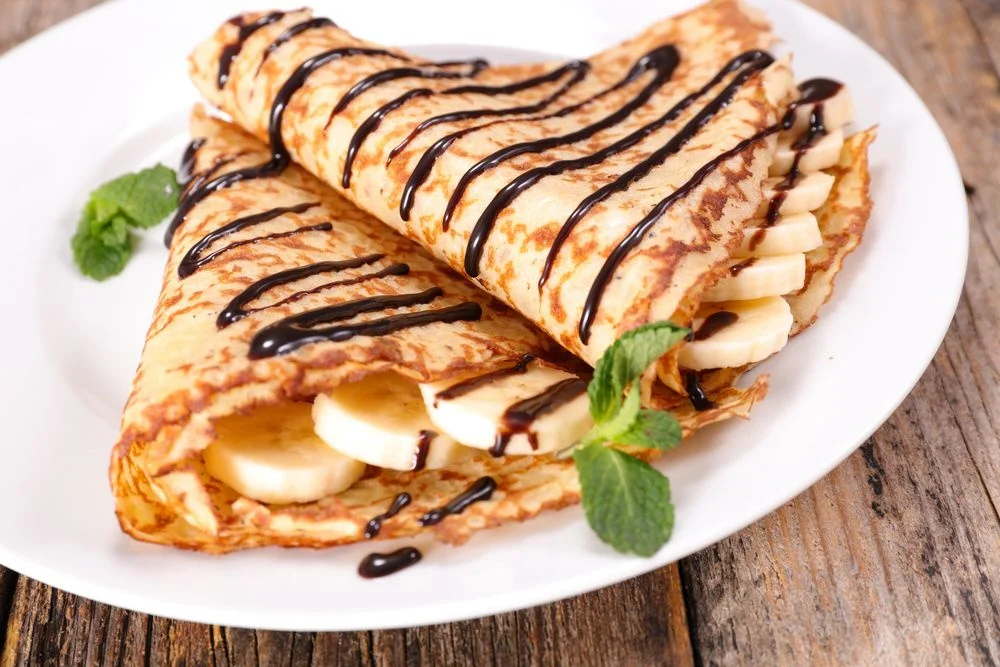
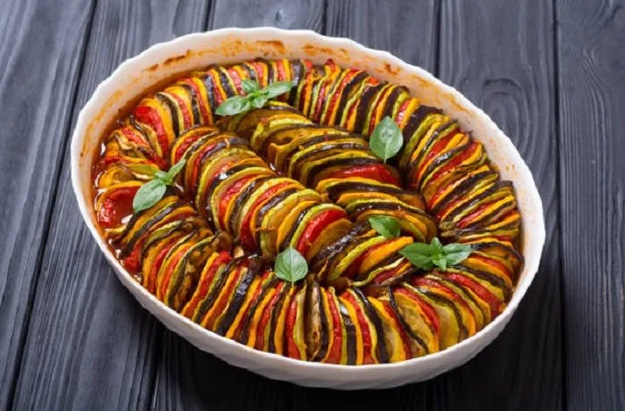

Sobre a culinária francesa
A culinária francesa é considerada uma das mais importantes e influentes do mundo. Ela se destaca pela valorização dos ingredientes, pelas técnicas refinadas de preparo e pela diversidade de pratos tradicionais que representam diferentes regiões da França.
Entre os pratos e alimentos mais conhecidos da culinária francesa estão o croissant, os crepes, a sopa de cebola francesa e o ratatouille. Essas receitas são apreciadas internacionalmente por seus sabores marcantes e pela tradição gastronômica que carregam.
Pratos populares
Croissant
Pão folhado amanteigado em formato de meia-lua, muito consumido no café da manhã francês.

Crepe
Massa fina preparada em uma chapa quente, podendo receber recheios doces ou salgados.

Ratatouille
Prato tradicional francês preparado com legumes como tomate, berinjela, abobrinha e pimentão.